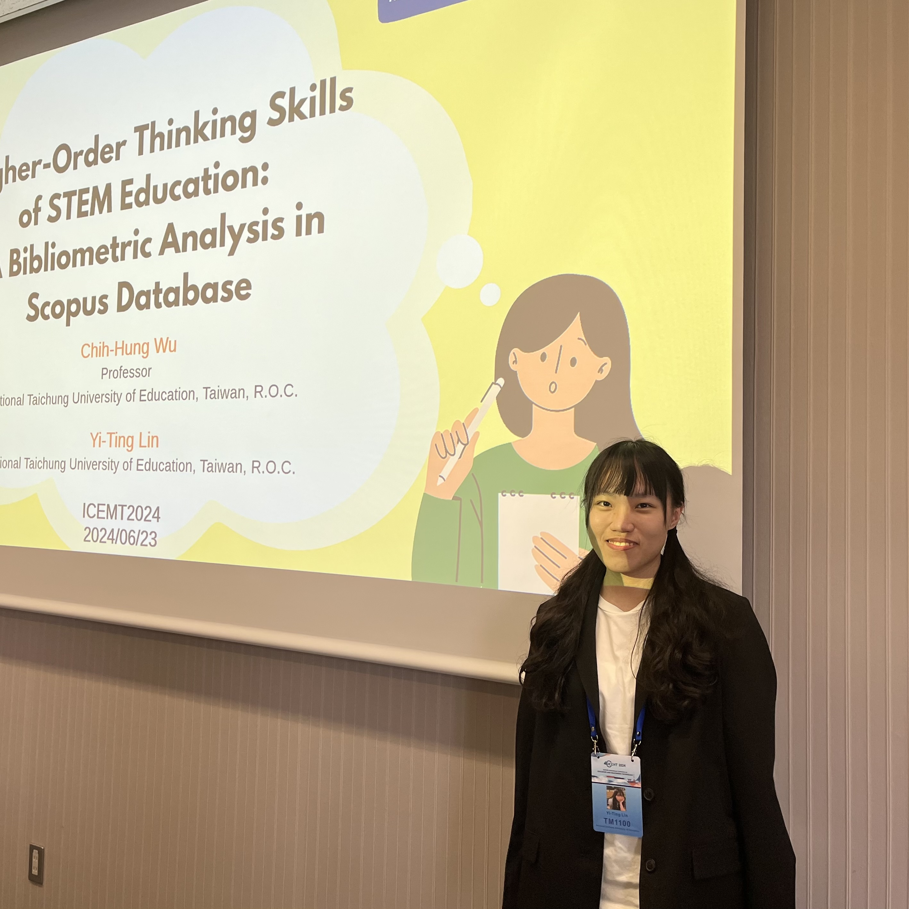
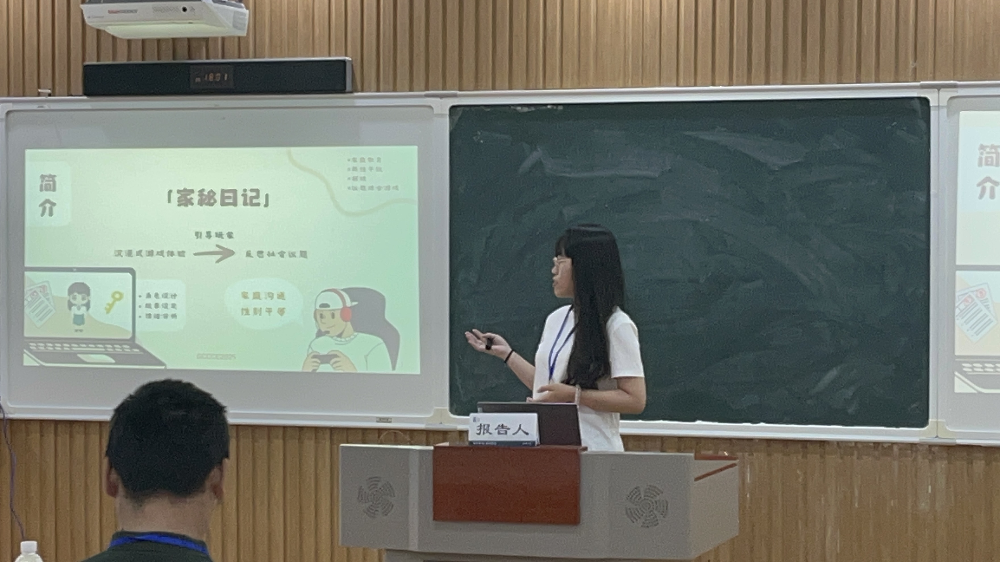

Research Directions & Publications of Lin, Y. T.
在研究領域中，我曾擔任教授的研究助理，參與多項學術專案，並運用 SPSS、SmartPLS 及 RStudio 等分析工具協助數據處理與論文撰寫。在此期間，我透過 Scopus 資料庫書目計量分析STEM 教育的國際研究趨勢，並參與運用認識網絡分析 (ENA) 證實遊戲化學習能有效激發學習者之高層次思考能力 (HOTS) 的相關研究。此外，開發了一套結合同理心對話架構與 LSTM 文本情緒分析並串接 ChatGPT 之系統，旨在探討 AI 介入是否能優化數位環境中的學習互動成效。另外，我與畢業專題團隊合作，將家庭教育與兩性平權議題融入直覺的遊戲設計中，致力於透過沉浸式體驗喚起大眾對社會議題的重視。經過這些學術實作經驗，我具備研究的能力，未來也希望持續深耕 AI 與數據科學領域，致力開發與研究兼具情感運算與跨域整合特色的創新數位學習生態系統。
In the field of research, I served as a research assistant to a professor, participating in numerous academic projects and utilizing analytical tools such as SPSS, SmartPLS, and RStudio to assist with data processing and thesis writing. During this time, I conducted bibliometric analysis using the Scopus database to examine international research trends in STEM education, and participated in research utilizing Entity Network Analysis (ENA) to demonstrate that gamified learning effectively stimulates learners’ higher-order thinking skills (HOTS). Additionally, I developed a system that integrates an empathetic dialogue framework with LSTM-based text sentiment analysis and connects to ChatGPT, aiming to explore whether AI intervention can optimize the effectiveness of learning interactions in digital environments. Furthermore, in collaboration with my graduation project team, I integrated family education and gender equality issues into intuitive game design, striving to raise public awareness of social issues through immersive experiences. Through these academic and practical experiences, I have developed research capabilities. In the future, I hope to continue deepening my expertise in the fields of AI and data science, dedicating myself to the development and research of innovative digital learning ecosystems that combine affective computing with cross-domain integration.
ICFET2026-12th International Conference on Frontiers of Educational Technologies, Tokyo, Japan. 2026/06/12-06/14
Wu, C. H.*, Chou, M. T., Lin, Y. T. (2026)
GCCCE 2025 Chinese Conference Proceedings
王曉璿，翁敏淳，林苡婷，辜伊辰，陳松筠 (2025)
Read Paper →ICEMT2025, Osaka, Japan. 2025/07/29-08/01
Wu, C. H.*, Lin, Y. T., Wang, J. K. (2025)
ICEMT2024, Tokyo, Japan. 2024/06/22-24
Wu, C. H.*, Lin, Y. T. (2024)
Read Paper →Wu, C. H.*, Lin, Y. T., Chou, M. T., Liu, C. H. (2026)
Wu, C. H.*, Lin, Y. T., Lai, H. M., Wang, J. K. (2025)
Wu, C. H., Lo, H. C.*, Chien, S. Y., Lin Y. T., Chou, M. T. (2025)
Wu, C. H., Lai, H. M.*, Wang, J. K., Lin, Y. T. (2024)
國科會大專生研究計畫NSTC 113-2813-C-142-015-H
林苡婷

